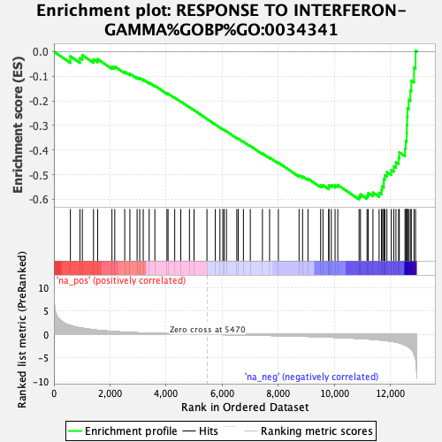

| | | Dataset | ER_ranked_genelist |
| Phenotype | NoPhenotypeAvailable |
| Upregulated in class | na_neg |
| GeneSet | RESPONSE TO INTERFERON-GAMMA%GOBP%GO:0034341 |
| Enrichment Score (ES) | -0.60101014 |
| Normalized Enrichment Score (NES) | -1.9363873 |
| Nominal p-value | 0.0 |
| FDR q-value | 0.028346298 |
| FWER p-Value | 0.177 |
Table: GSEA Results Summary

Fig 1: Enrichment plot: RESPONSE TO INTERFERON-GAMMA%GOBP%GO:0034341
Profile of the Running ES Score & Positions of GeneSet Members on the Rank Ordered List
| SYMBOL | RANK IN GENE LIST | RANK METRIC SCORE | RUNNING ES | CORE ENRICHMENT | | 1 | MT2A | 587 | 1.899 | -0.0193 | No |
| 2 | DAPK3 | 926 | 1.398 | -0.0263 | No |
| 3 | HCK | 1013 | 1.328 | -0.0146 | No |
| 4 | TRIM8 | 1410 | 0.988 | -0.0317 | No |
| 5 | CITED1 | 1558 | 0.895 | -0.0307 | No |
| 6 | ICAM1 | 2068 | 0.647 | -0.0613 | No |
| 7 | IRF3 | 2168 | 0.603 | -0.0607 | No |
| 8 | SLC11A1 | 2523 | 0.471 | -0.0817 | No |
| 9 | CD44 | 2707 | 0.412 | -0.0902 | No |
| 10 | TLR2 | 2964 | 0.350 | -0.1053 | No |
| 11 | IFNGR2 | 3057 | 0.328 | -0.1079 | No |
| 12 | TRIM26 | 3183 | 0.299 | -0.1134 | No |
| 13 | KYNU | 3394 | 0.257 | -0.1262 | No |
| 14 | CYP27B1 | 3597 | 0.223 | -0.1388 | No |
| 15 | GBP3 | 4027 | 0.161 | -0.1700 | No |
| 16 | LGALS9 | 4067 | 0.156 | -0.1708 | No |
| 17 | IFNGR1 | 4304 | 0.122 | -0.1875 | No |
| 18 | IFITM2 | 4520 | 0.093 | -0.2029 | No |
| 19 | IFITM3 | 4829 | 0.060 | -0.2261 | No |
| 20 | JAK2 | 4993 | 0.045 | -0.2381 | No |
| 21 | PML | 5453 | 0.001 | -0.2738 | No |
| 22 | TRIM25 | 5751 | -0.026 | -0.2965 | No |
| 23 | PTAFR | 5915 | -0.039 | -0.3087 | No |
| 24 | SYNCRIP | 6017 | -0.049 | -0.3158 | No |
| 25 | PDE12 | 6066 | -0.055 | -0.3188 | No |
| 26 | IFITM1 | 6147 | -0.062 | -0.3242 | No |
| 27 | JAK1 | 6516 | -0.098 | -0.3514 | No |
| 28 | TRIM5 | 6568 | -0.105 | -0.3539 | No |
| 29 | RPL13A | 6752 | -0.124 | -0.3665 | No |
| 30 | CIITA | 6998 | -0.151 | -0.3834 | No |
| 31 | IRF5 | 7430 | -0.197 | -0.4142 | No |
| 32 | CCL5 | 7685 | -0.229 | -0.4308 | No |
| 33 | NUB1 | 7997 | -0.265 | -0.4513 | No |
| 34 | DAPK1 | 8735 | -0.376 | -0.5034 | No |
| 35 | MID1 | 8860 | -0.396 | -0.5076 | No |
| 36 | TRIM68 | 9053 | -0.428 | -0.5166 | No |
| 37 | TRIM21 | 9504 | -0.518 | -0.5444 | No |
| 38 | CAMK2D | 9586 | -0.532 | -0.5433 | No |
| 39 | STAT1 | 9789 | -0.574 | -0.5511 | No |
| 40 | IRF2 | 9801 | -0.577 | -0.5440 | No |
| 41 | TRIM62 | 9885 | -0.595 | -0.5422 | No |
| 42 | GBP1 | 10018 | -0.630 | -0.5437 | No |
| 43 | GBP2 | 10115 | -0.651 | -0.5421 | No |
| 44 | CALCOCO2 | 10873 | -0.869 | -0.5890 | Yes |
| 45 | GCH1 | 10924 | -0.891 | -0.5805 | Yes |
| 46 | CX3CL1 | 11157 | -0.963 | -0.5852 | Yes |
| 47 | SP100 | 11200 | -0.980 | -0.5749 | Yes |
| 48 | CD58 | 11368 | -1.065 | -0.5732 | Yes |
| 49 | UBD | 11588 | -1.169 | -0.5740 | Yes |
| 50 | IRF7 | 11673 | -1.220 | -0.5636 | Yes |
| 51 | GAPDH | 11691 | -1.230 | -0.5479 | Yes |
| 52 | PRKCD | 11753 | -1.260 | -0.5352 | Yes |
| 53 | CCL22 | 11755 | -1.261 | -0.5178 | Yes |
| 54 | TRIM38 | 11794 | -1.294 | -0.5029 | Yes |
| 55 | CD47 | 11865 | -1.344 | -0.4897 | Yes |
| 56 | IRF9 | 12020 | -1.477 | -0.4812 | Yes |
| 57 | CXCL16 | 12111 | -1.555 | -0.4667 | Yes |
| 58 | OAS3 | 12187 | -1.642 | -0.4498 | Yes |
| 59 | B2M | 12283 | -1.768 | -0.4327 | Yes |
| 60 | CAMK2G | 12307 | -1.803 | -0.4095 | Yes |
| 61 | SIRPA | 12511 | -2.263 | -0.3939 | Yes |
| 62 | IRF6 | 12537 | -2.338 | -0.3635 | Yes |
| 63 | CAMK2B | 12570 | -2.442 | -0.3321 | Yes |
| 64 | OAS1 | 12577 | -2.462 | -0.2985 | Yes |
| 65 | SLC26A6 | 12589 | -2.508 | -0.2646 | Yes |
| 66 | OASL | 12599 | -2.536 | -0.2302 | Yes |
| 67 | OAS2 | 12643 | -2.702 | -0.1961 | Yes |
| 68 | IRF1 | 12701 | -3.020 | -0.1587 | Yes |
| 69 | BST2 | 12735 | -3.161 | -0.1175 | Yes |
| 70 | CD74 | 12832 | -4.271 | -0.0658 | Yes |
| 71 | IFI30 | 12886 | -5.297 | 0.0034 | Yes |
Table: GSEA details [plain text format]
Fig 2: RESPONSE TO INTERFERON-GAMMA%GOBP%GO:0034341: Random ES distribution
Gene set null distribution of ES for RESPONSE TO INTERFERON-GAMMA%GOBP%GO:0034341